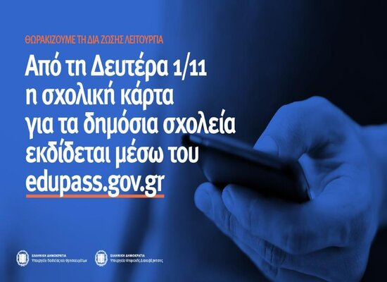

ΣΧΟΛΙΚΗ ΚΑΡΤΑ ΑΠΟ ΔΕΥΤΕΡΑ 1/11
26-10-21 Η λειτουργία του «edupass.gov.gr» επεκτείνεται στις σχολικές μονάδες της δημόσιας πρωτοβάθμιας, δευτεροβάθμιας εκπαίδευσης και ειδικής αγωγής Από τη Δευτέρα 1 Νοεμβρίου 2021 τίθεται σε λειτουργία για τις δημόσιες σχολικές μονάδες η πλατφόρμα edupass.gov.gr, η οποία αποτελεί ένα επιπλέον εργαλείο για την υγειονομική θωράκιση της δια ζώσης λειτουργίας των δημόσιων εκπαιδευτικών δομών. Χάρη στο edupass.gov.gr o Διευθυντής της σχολικής μονάδας θα μπορεί ανά πάσα στιγμή να επιβεβαιώνει ότι εντός της σχολικής μονάδας βρίσκονται μόνο πρόσωπα (μαθητές/τριες, εκπαιδευτικοί/μέλη Ε.Ε.Π.-Ε.Β.Π., επισκέπτες), τα οποία πληρούν τις προϋποθέσεις φυσικής παρουσίας στη δια ζώσης εκπαιδευτική διαδικασία. H πλατφόρμα αφορά επί του παρόντος μόνο τις σχολικές μονάδες της δημόσιας πρωτοβάθμιας, δευτεροβάθμιας εκπαίδευσης και ειδικής αγωγής. Στην πλατφόρμα ενσωματώνονται όλες οι λειτουργίες του self-testing.gov.gr και η διαδικασία έκδοσης της Σχολικής Κάρτας για COVID-19. Οι γονείς/κηδεμόνες των μαθητών/τριών που φοιτούν σε ιδιωτικές σχολικές μονάδες θα εξακολουθήσουν να δηλώνουν το αποτέλεσμα των self-test στην πλατφόρμα self-testing.gov.gr και να εκδίδουν την Σχολική Κάρτα για COVID-19, ακολουθώντας την ιδία ακριβώς διαδικασία που ακολουθούν μέχρι και σήμερα. Επισημαίνεται ότι το self-test που πρέπει να δηλωθεί στις 28-29/10/2021 από τους γονείς/κηδεμόνες μαθητών που φοιτούν σε δημόσιες σχολικές μονάδες θα δηλωθεί -για τελευταία φορά- στην πλατφόρμα self-testing.gov.gr. Υπόχρεοι υποβολής στην πλατφόρμα edupass.gov.gr δήλωσης συμμετοχής με φυσική παρουσία στη δια ζώσης εκπαιδευτική διαδικασία στις δημόσιες σχολικές μονάδες είναι: (α) οι μαθητές/τριες, (β) το εκπαιδευτικό προσωπικό και μέλη Ειδικού Εκπαιδευτικού Προσωπικού (Ε.Ε.Π.) και Ειδικού Βοηθητικού Προσωπικού (Ε.Β.Π.), (γ) κάθε άλλο φυσικό πρόσωπο, που συμμετέχει με φυσική παρουσία σε κάθε είδους εκπαιδευτική διαδικασία που διενεργείται εντός των χώρων της δημόσιας εκπαιδευτικής δομής («επισκέπτες»), όπως για παράδειγμα φοιτητές/τριες που πραγματοποιούν πρακτική άσκηση στη σχολική μονάδα. Οι υπόχρεοι ή οι γονείς/κηδεμόνες τους εισέρχονται στην πλατφόρμα και δηλώνουν την πρόθεση φυσικής παρουσίας τους στους χώρους της σχολικής μονάδας, ζητώντας να αποστέλλεται στη θυρίδα της σχολικής μονάδας τους η κατάστασή τους. Α) Σε περίπτωση που έχουν εμβολιασθεί ή που έχουν νοσήσει εντός του τελευταίου εξαμήνου η δήλωση αυτή πρέπει να γίνει μία μόνο φορά και Β) σε περίπτωση υποβολής σε διαγνωστικό (rapid/PCR) ή αυτοδιαγνωστικό έλεγχο (self test), όσες φορές απαιτείται από το εκάστοτε ισχύον πλαίσιο, π.χ. για τους μαθητές που δεν έχουν εμβολιασθεί/νοσήσει εντός του τελευταίου εξαμήνου η αντίστοιχη δήλωση στο edupass.gov.gr πρέπει να υποβάλλεται δύο φορές την εβδομάδα. Υπενθυμίζεται ότι το edupass.gov.gr σε πρώτη φάση ενεργοποιήθηκε πριν από λίγες εβδομάδες για τα Ανώτατα Εκπαιδευτικά Ιδρύματα (ΑΕΙ) και στόχος του είναι να συμβάλει στην προστασία της δημόσιας υγείας, αλλά και στην απλούστευση των διαδικασιών ελέγχου για την τήρηση των υγειονομικών πρωτοκόλλων. Η νέα πλατφόρμα συνιστά αποτέλεσμα της συνεργασίας των Υπουργείων Παιδείας και Θρησκευμάτων και Ψηφιακής Διακυβέρνησης και είναι προσβάσιμη από το gov.gr. Υλοποιήθηκε από το Εθνικό Δίκτυο Υποδομών Τεχνολογίας και Έρευνας (ΕΔΥΤΕ ΑΕ – GRNET), εποπτευόμενο φορέα του Υπουργείου Ψηφιακής Διακυβέρνησης, ενώ η άντληση των στοιχείων πραγματοποιείται από το Κέντρο Διαλειτουργικότητας της Γενικής Γραμματείας Πληροφοριακών Συστημάτων Δημόσιας Διοίκησης και την ΗΔΙΚΑ.